Lecture Notes 16: Decidability
Outline
This class we'll discuss:
Turing Machines and Decidability
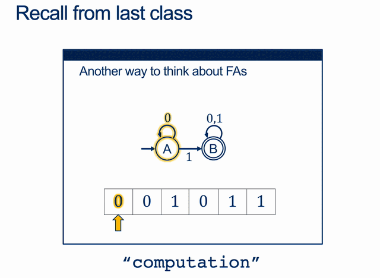

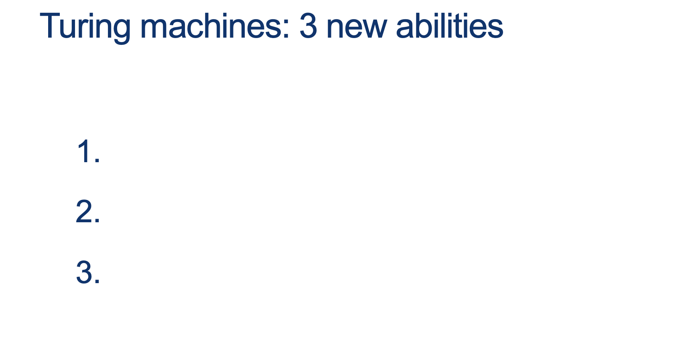
(Wait; then Click)
- move both left and right
- write new symbols to the tape
- stop at any point and return an answer
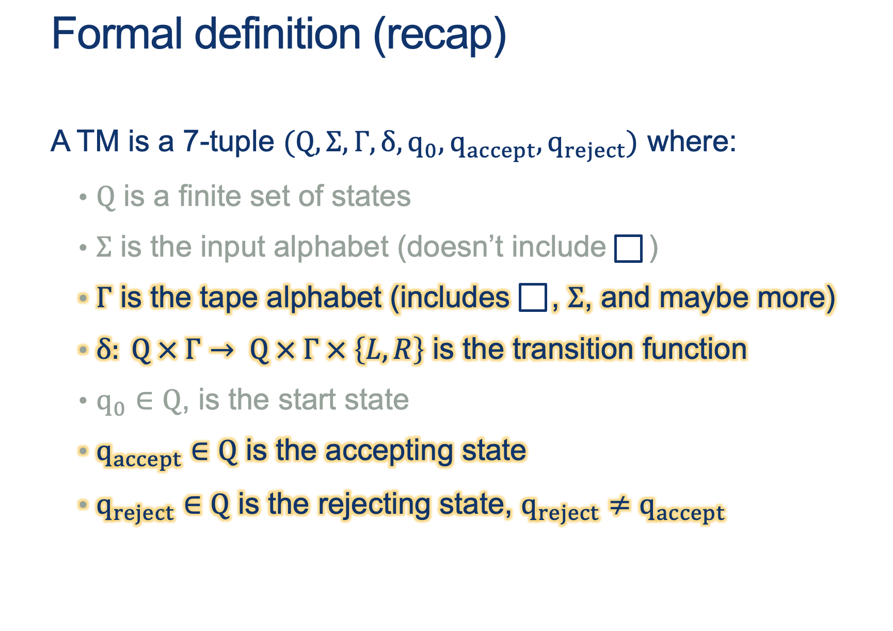
Recognizing vs Deciding
Recognizing a word is having the capacity of saying "YES, I know this one", if that word is in the Language \(L\) you are able to "Recognize".
Note: If you are trying to Recognize a word, but you are not done checking, .... how long do you wait?
In other words, you just say: If I say "YES", I'm sure it is "YES" (ACCEPT), but I don't promise anything else.
Deciding a word is having the capacity of saying "YES, I know this one", if that word is in the Language \(L\) you are able to "Decide", AND "NO, this one is NOT one of mine" for ALL words that are not in the Language you are able to "Decide" (called the complement of \(L\), or \(L^c\) or \(\bar{L}\).
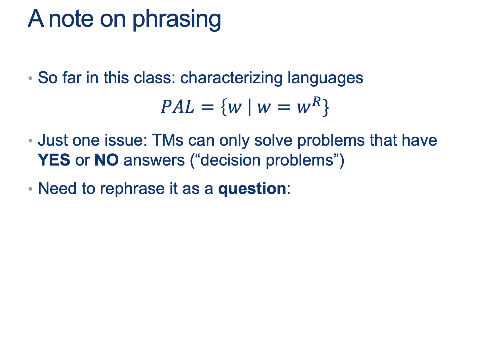
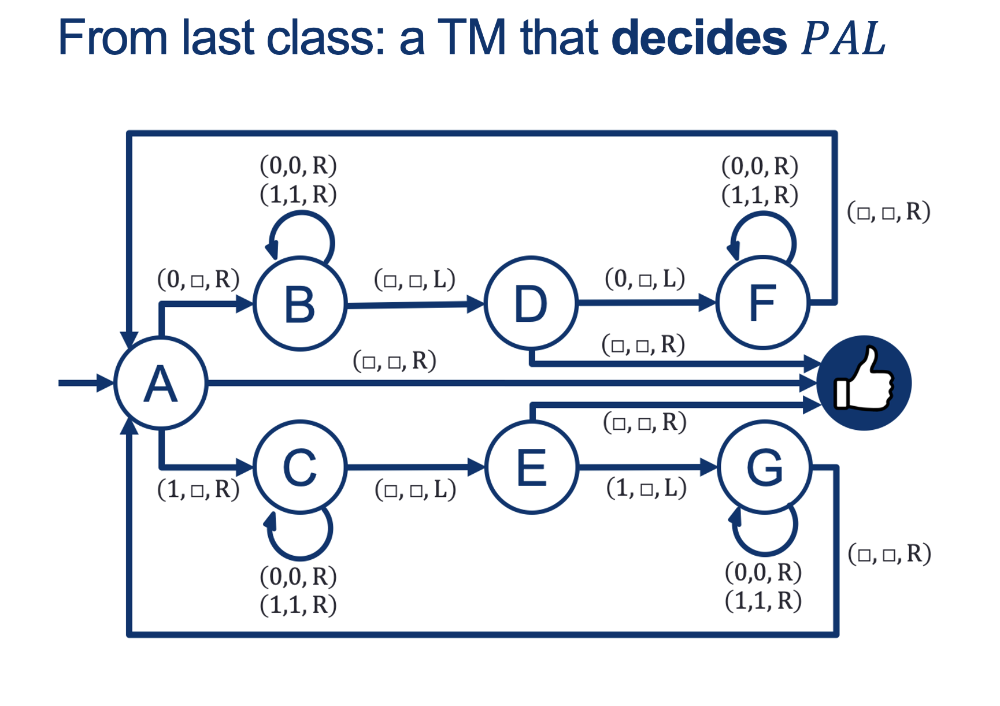
(Wait; then Click)
- Isn't just looking for a while (true)?
- How about an example problem:
On input w:
while |w| > 0:
i. note whether 1st letter is a 0 or a 1 and erase it
ii. go all the way to the right until you hit the end of the string
iii. go one to the left
iv. if this letter doesn't match the one we remembered, REJECT;
otherwise erase it and go back to the start.
ACCEPT.
Big Idea 1: Emulating
If the TM \(U\) has arbitrary memory (Tape), we can "save" input descriptions of other machines \(M\) and, given a word \(w\) as input, process the word using the rules we read from the tape and interpret with the states described in \(M\).
In other words, TM \(U\) can emulate other turing machines \(M\) for some input \(w\)
Big Idea 2: Input Descriptions
If TM \(U\) can emulate \(< M, w >\),
We can make the input \(w\) the description of another machine \( M_2 \)
In other words, TM \(U\) can emulate other turing machines \(M\) that can get as input, other turing machines \(w = description(M_2)\)
Or \(U\) emulates \(< M, description(M_2) >\) or just \(< M, M_2 >\)
Where we left off...
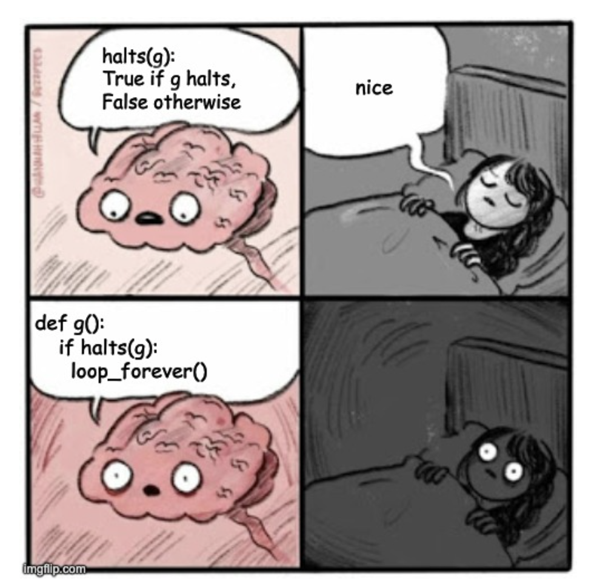

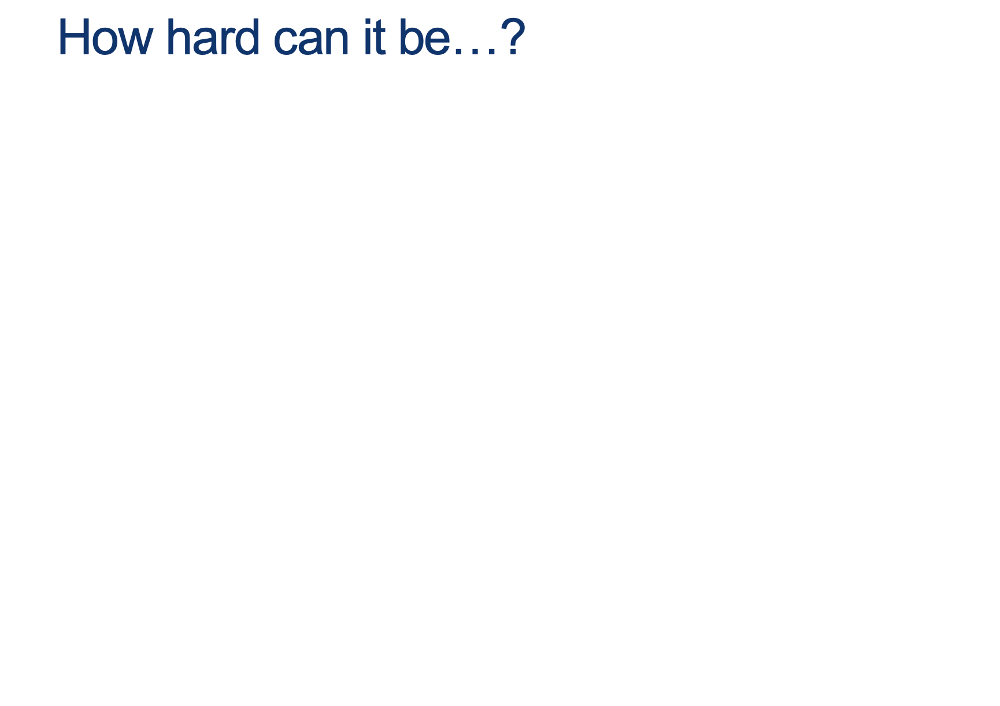
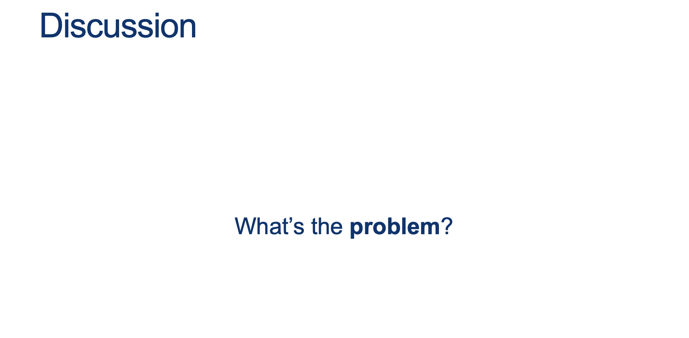
(Wait; then Click)
- Isn't just looking for a while (true)?
- How about an example problem:
\[
\begin{align*}
&n = 19 \\
&while \ (n != 1): \\
& \quad if \ n\%2 == 0: \\
& \quad \quad n = n/2 \\
& \quad else : \\
& \quad \quad n = 3*n + 1 \\
\end{align*}
\]
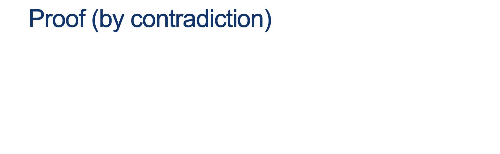
(Wait; then Click)
- How about an example problem:
Assume we have a turing machine H that decides (Accept AND Reject) HALT :
\[
\begin{align*}
&M_{HALT}: \\
& \text{On INPUT $< M, w >$} \\
& \quad \text{ if M HALTS on w, ACCEPT } \\
& \quad \text{ if M FLOOPS on w, REJECT }
\end{align*}
\]
Since there are no restrictions on what w looks like, it’s possible that w could be the description of another machine.
(this is actually pretty familiar: that’s exactly what a compiler is, right? A program that takes another program as input)
Let’s use this machine to define a new helper machine called \(M_{TEST\_ON\_ITSELF}\):
\[
\begin{align*}
&M_{TEST\_ON\_ITSELF}: \\
& On \; INPUT \; < M > \\
& \quad \color{gray}{ \text{# run $M_{H} ( < M , < M > > )$ ADWID } } \\
& \quad \text{run $M_{HALT} ( < M , < M > >)$}\\
& \quad \text{if $M_{HALT}( < M , < M > > )$ returns ACCEPT, ACCEPT } \\
& \quad \text{if $M_{HALT}( < M , < M > > )$ returns REJECT, REJECT } \\
\end{align*}
\]
- This machine just takes in the description of a machine \( < M > \) as input (no w)
- It then calls the decider for HALT to see what would happen if we ran that machine on its own description ADWID (And Do What It Does)
Finally, we’ll define one last machine \(M_{X}\) that FLOOPS if \(M_{TEST\_ON\_ITSELF}\) says ACCEPT;
otherwise ADWID.
\[
\begin{align*}
&M_{X}: \\
& On \; INPUT \; < M > \\
& \quad \text{run $M_{TEST\_ON\_ITSELF} ( < M > )$}\\
& \quad \text{if $M_{TEST\_ON\_ITSELF}( < M > )$ returns ACCEPT (HALTS), FLOOP } \\
& \quad \text{if $M_{TEST\_ON\_ITSELF}( < M > )$ returns REJECT (FLOOPS), ADWID (if Rej->Rej; if FLoop -> Floop)) } \\
\end{align*}
\]
So, What happens if we run \( M_{X} ( < M_{X} > ) \)?
Inside \(M_{X}\), we call \(M_{TEST\_ON\_ITSELF}( < M_{X} > )\), which calls \(M_{HALT} ( < M_{X} , < M_{X} > >)\).
If \(M_{X}\) halts when fed \(M_{X}\) as input then the call \(M_{X} ( < M_{X} >) \) loops forever.
If \(M_{X}\) doesn't halt when fed \(M_{X}\) as input, then the call \(M_{X} ( < M_{X} >) \) halts.
\(M_{X} ( < M_{X} >) \) can neither halt nor loop forever.
This is a contradiction! Since our only assumption was the existence of HALTS, procedure HALTS cannot exist.
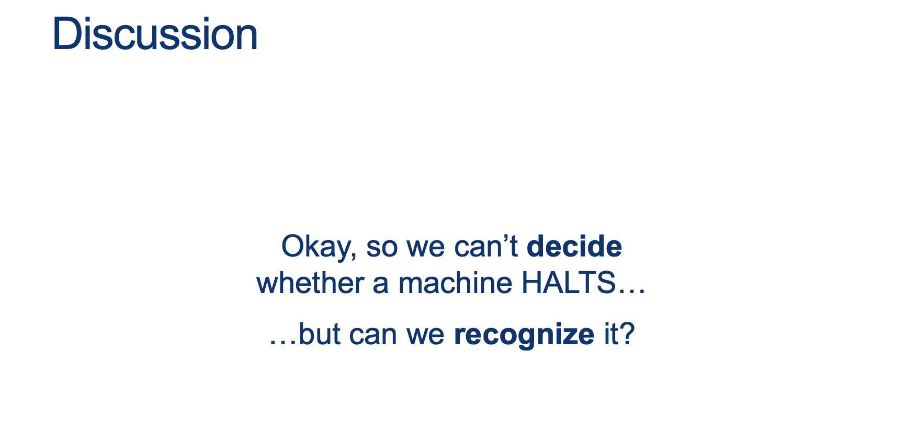
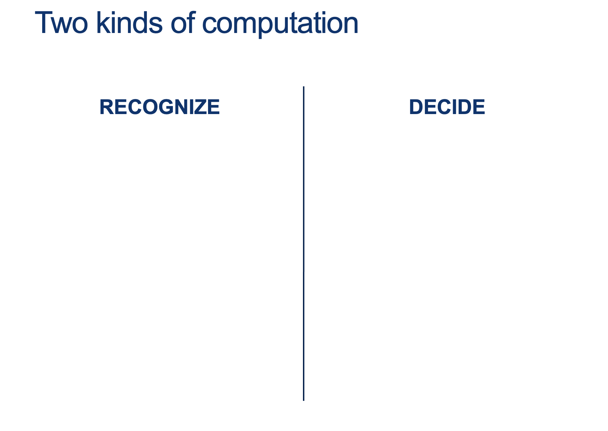

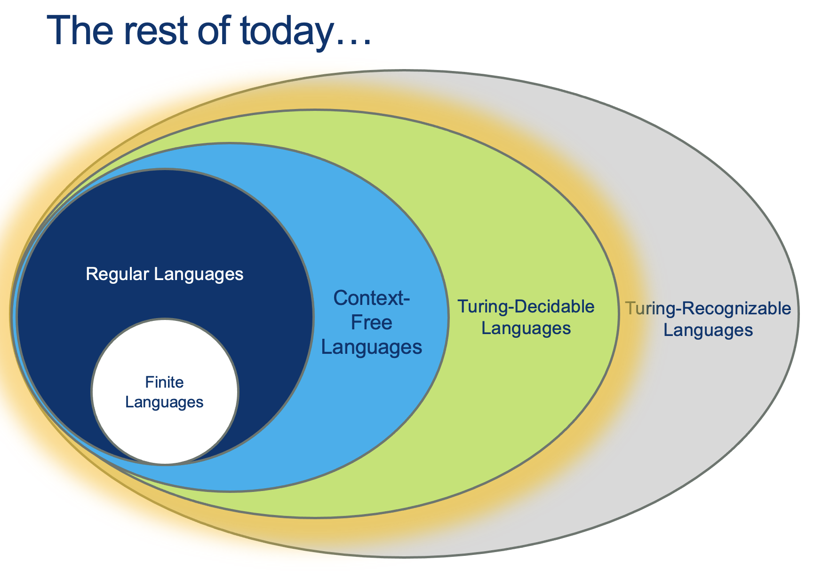


(Wait; then Click)
- Run both machines in parallel.
Accept if either accepts.

(Wait; then Click)
- Run both machines in parallel.
Accept if both accept.
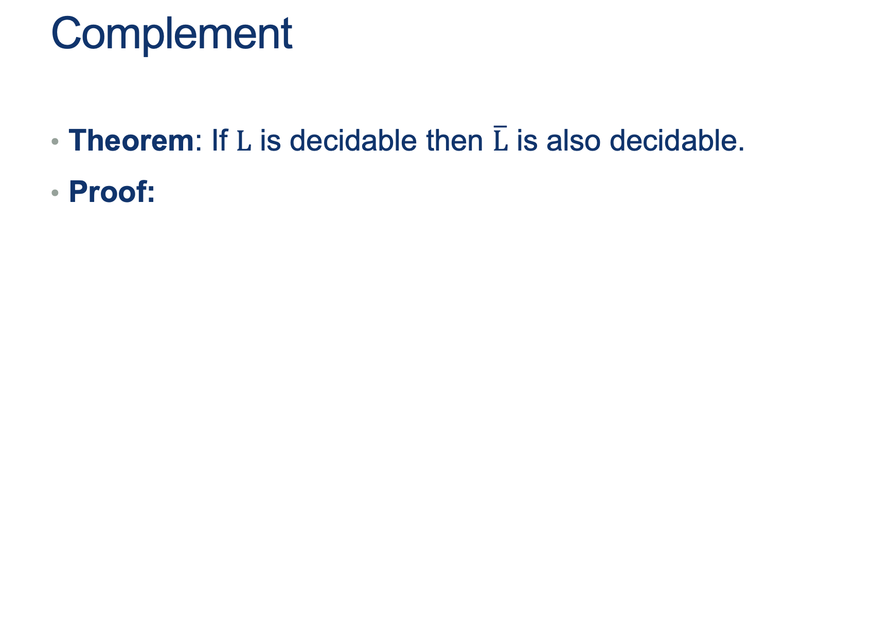
(Wait; then Click)
- Suppose that M decides L.
- Design a new machine \(M^\prime\) that behaves just like M, but:
- If M accepts, \(M^{\prime}\) rejects.
- If M rejects, \(M^{\prime}\) accepts.
- Formally, can do this by interchanging \(q_{acc}\) and \( q_{rej} \).
- Then \(M^{\prime}\) decides \(L^c\).
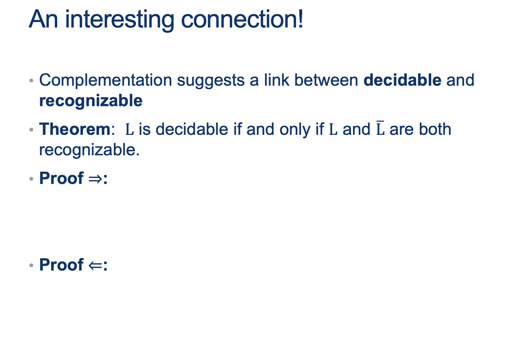

(Wait; then Click)
Run both M1 and M2 on w.
• One must accept.
• If M1 accepts, then M accepts.
• If M 2 accepts, then M rejects.
How? In sequence? What if M1 loops?
What can we do?
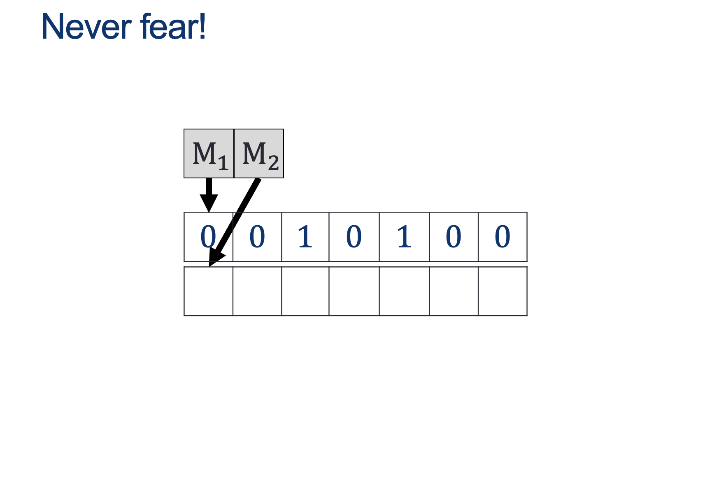

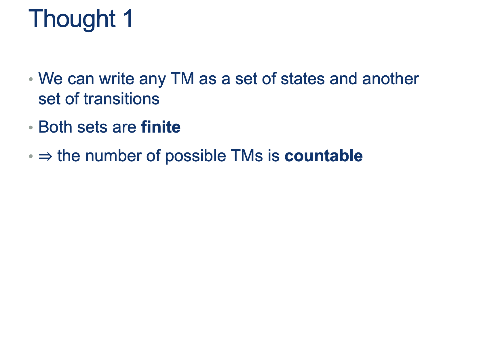
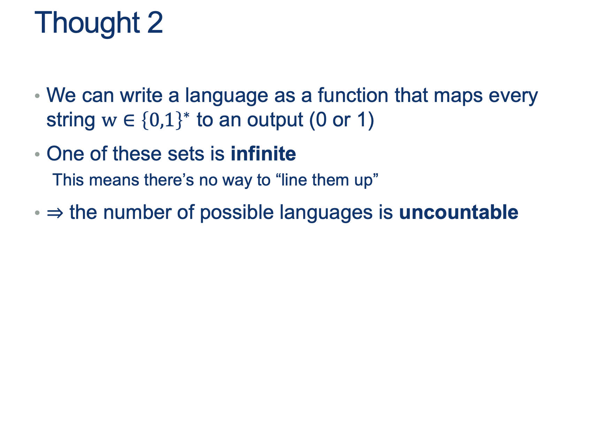

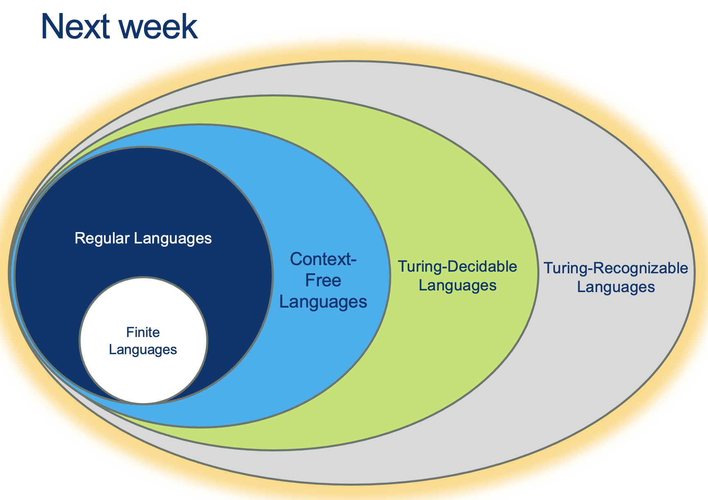
Next class: Decidability
Before next class (Wednesday)
[Due for everyone]
TODO
[Optional]
TODO